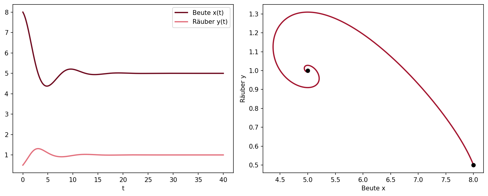
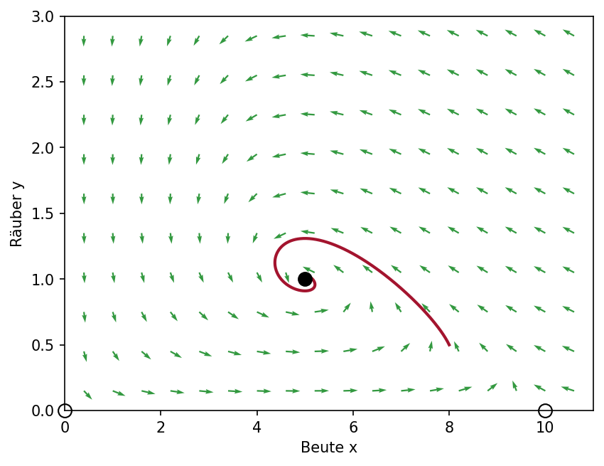
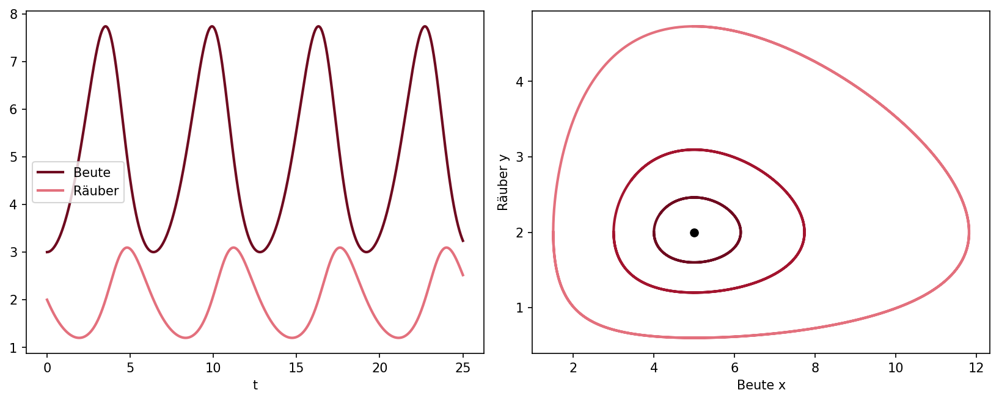
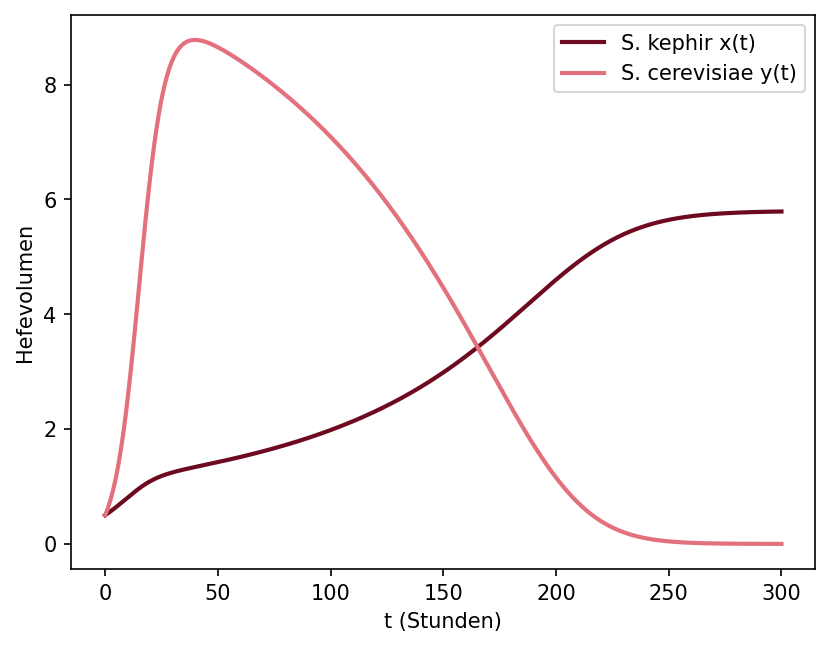
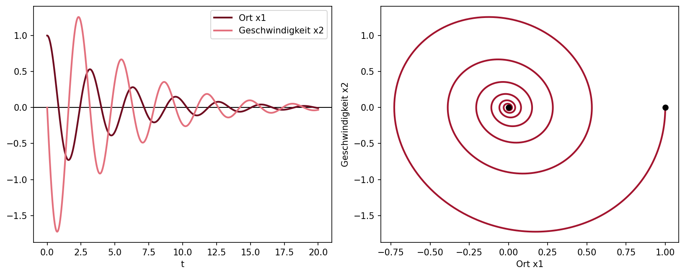
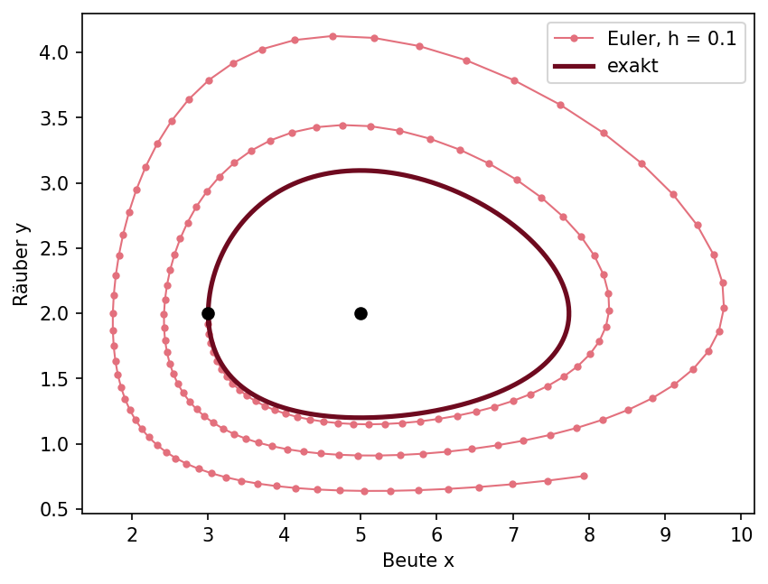

Kapitel 4 · Kontinuierliche dynamische Systeme mit mehreren Variablen
4.1Systeme von Differentialgleichungen
Mehrere Größen, die sich gegenseitig beeinflussen, führen auf ein System von Differentialgleichungen. Seine Lösung betrachtet man als Zeitverläufe oder als Bahn in der Phasenebene, in der das Richtungsfeld die Bewegung vorgibt. Die Programme lösen die Systeme mit solve_ivp (Python) bzw. ode45 (MATLAB) oder mit dem Euler-Verfahren.
Zu jeder Abbildung des Abschnitts finden Sie das Programm, das sie erzeugt. Ändern Sie Parameter und Startwerte und beobachten Sie, was passiert. Abbildungs- und Gleichungsnummern beziehen sich auf das Buch.
Abb. 4.2
Räuber-Beute-Modell
dx/dt = r (1 − x/K) x − c x y, dy/dt = d x y − e y
Beute und Räuber schwingen gegeneinander versetzt und nähern sich dabei dem stationären Zustand (5, 1). In der Phasenebene wird daraus eine Spirale.

# Abb. 4.2: kontinuierliches Räuber-Beute-Modell (Buch, Abschnitt 4.1, Gl. 4.2)
# dx/dt = r (1 - x/K) x - c x y, dy/dt = d x y - e y mit r = 1, K = 10, c = 0.5, d = 0.2, e = 1, x(0) = 8, y(0) = 0.5
# links Zeitverläufe, rechts dieselbe Lösung in der Phasenebene
# (c) 2026 Philipp Kügler · Programm zum Buch „Dynamische Systeme in den Lebenswissenschaften“ · MIT-Lizenz (siehe LICENSE)
using Printf, Plots
using OrdinaryDiffEq # Paket OrdinaryDiffEq: using Pkg; Pkg.add("OrdinaryDiffEq")
# löst dz/dt = f(t, z) und gibt die Lösung zu den Zeitpunkten t zurück (Zeile i = Komponente i)
loese(f, z0, t; alg = Tsit5(), kw...) = Array(solve(ODEProblem((z, p, s) -> f(s, z), float.(z0), (t[1], t[end])), alg;
reltol = 1e-10, abstol = 1e-12, saveat = t, kw...))
R1 = RGB(0.43, 0.04, 0.12); R2 = RGB(0.64, 0.08, 0.18); R3 = RGB(0.89, 0.44, 0.49)
BL = RGB(0, 0.447, 0.741); HB = RGB(0.45, 0.70, 0.90); GR = RGB(0.2, 0.6, 0.25)
idx(t, tt) = findfirst(t .>= tt - 1e-9) # erster Index mit t >= tt
r = 1; K = 10; c = 0.5; d = 0.2; e = 1
f(t, z) = [r * (1 - z[1] / K) * z[1] - c * z[1] * z[2], d * z[1] * z[2] - e * z[2]]
t = range(0, 40, length = 2001)
z = loese(f, [8, 0.5], t); x = z[1, :]; y = z[2, :]
for tt in (10, 20, 40)
i = idx(t, tt)
@printf("t = %2d: x = %.3f, y = %.3f\n", tt, x[i], y[i])
end
@printf("stationärer Zustand (e/d, r/c (1 - e/(d K))) = (%g, %g)\n", e / d, r / c * (1 - e / (d * K)))
p1 = plot(t, x, color = R1, lw = 2, label = "Beute x(t)", xlabel = "t")
plot!(p1, t, y, color = R3, lw = 2, label = "Räuber y(t)")
p2 = plot(x, y, color = R2, lw = 2, legend = false, xlabel = "Beute x", ylabel = "Räuber y")
scatter!(p2, [8, 5], [0.5, 1], color = :black)
display(plot(p1, p2, layout = (1, 2), size = (900, 420)))% Abb. 4.2: kontinuierliches Räuber-Beute-Modell (Buch, Abschnitt 4.1, Gl. 4.2)
% dx/dt = r (1 - x/K) x - c x y, dy/dt = d x y - e y mit r = 1, K = 10, c = 0.5, d = 0.2, e = 1, x(0) = 8, y(0) = 0.5
% links Zeitverläufe, rechts dieselbe Lösung in der Phasenebene
% (c) 2026 Philipp Kügler · Programm zum Buch „Dynamische Systeme in den Lebenswissenschaften“ · MIT-Lizenz (siehe LICENSE)
r = 1; K = 10; c = 0.5; d = 0.2; e = 1;
f = @(t, z) [r * (1 - z(1) / K) * z(1) - c * z(1) * z(2); d * z(1) * z(2) - e * z(2)];
opt = odeset('RelTol', 1e-9, 'AbsTol', 1e-11);
t = linspace(0, 40, 2001);
[t, z] = ode45(f, t, [8; 0.5], opt); % Zeile i von z: Lösung zur Zeit t(i)
x = z(:, 1); y = z(:, 2);
for tt = [10 20 40]
i = find(t >= tt - 1e-9, 1);
fprintf('t = %2d: x = %.3f, y = %.3f\n', tt, x(i), y(i));
end
fprintf('stationärer Zustand (e/d, r/c (1 - e/(d K))) = (%g, %g)\n', e / d, r / c * (1 - e / (d * K)));
subplot(1, 2, 1);
plot(t, x, 'Color', [0.43 0.04 0.12], 'LineWidth', 2); hold on
plot(t, y, 'Color', [0.89 0.44 0.49], 'LineWidth', 2); hold off
xlabel('t'); legend('Beute x(t)', 'Räuber y(t)');
subplot(1, 2, 2);
plot(x, y, 'Color', [0.64 0.08 0.18], 'LineWidth', 2); hold on
plot([x(1) 5], [y(1) 1], 'ko', 'MarkerFaceColor', 'k'); hold off
xlabel('Beute x'); ylabel('Räuber y');# Abb. 4.2: kontinuierliches Räuber-Beute-Modell (Buch, Abschnitt 4.1, Gl. 4.2)
# dx/dt = r (1 - x/K) x - c x y, dy/dt = d x y - e y mit r = 1, K = 10, c = 0.5, d = 0.2, e = 1, x(0) = 8, y(0) = 0.5
# links Zeitverläufe, rechts dieselbe Lösung in der Phasenebene
# (c) 2026 Philipp Kügler · Programm zum Buch „Dynamische Systeme in den Lebenswissenschaften“ · MIT-Lizenz (siehe LICENSE)
import numpy as np
import matplotlib.pyplot as plt
from scipy.integrate import solve_ivp
r, K, c, d, e = 1, 10, 0.5, 0.2, 1
f = lambda t, z: [r * (1 - z[0] / K) * z[0] - c * z[0] * z[1], d * z[0] * z[1] - e * z[1]]
t = np.linspace(0, 40, 2001)
s = solve_ivp(f, [0, 40], [8, 0.5], t_eval=t, rtol=1e-9, atol=1e-11)
x, y = s.y
for tt in [10, 20, 40]:
i = np.searchsorted(t, tt)
print(f"t = {tt:2d}: x = {x[i]:.3f}, y = {y[i]:.3f}")
print(f"stationärer Zustand (e/d, r/c (1 - e/(d K))) = ({e / d:g}, {r / c * (1 - e / (d * K)):g})")
fig, axs = plt.subplots(1, 2, figsize=(11, 4.5))
axs[0].plot(t, x, color=(0.43, 0.04, 0.12), lw=2, label="Beute x(t)")
axs[0].plot(t, y, color=(0.89, 0.44, 0.49), lw=2, label="Räuber y(t)")
axs[0].set_xlabel("t"); axs[0].legend()
axs[1].plot(x, y, color=(0.64, 0.08, 0.18), lw=2); axs[1].plot(x[0], y[0], "ko"); axs[1].plot(5, 1, "ko")
axs[1].set_xlabel("Beute x"); axs[1].set_ylabel("Räuber y")
plt.tight_layout()
plt.show()# Abb. 4.2: kontinuierliches Räuber-Beute-Modell (Buch, Abschnitt 4.1, Gl. 4.2)
# dx/dt = r (1 - x/K) x - c x y, dy/dt = d x y - e y mit r = 1, K = 10, c = 0.5, d = 0.2, e = 1, x(0) = 8, y(0) = 0.5
# links Zeitverläufe, rechts dieselbe Lösung in der Phasenebene
# (c) 2026 Philipp Kügler · Programm zum Buch „Dynamische Systeme in den Lebenswissenschaften“ · MIT-Lizenz (siehe LICENSE)
library(deSolve) # Paket deSolve: install.packages("deSolve")
r <- 1; K <- 10; c <- 0.5; d <- 0.2; e <- 1
f <- function(t, z) c(r * (1 - z[1] / K) * z[1] - c * z[1] * z[2], d * z[1] * z[2] - e * z[2])
loese <- function(f, z0, t) ode(z0, t, function(t, z, p) list(f(t, z)), NULL, method = "lsoda", rtol = 1e-10, atol = 1e-12)
x <- loese(f, c(8, 0.5), seq(0, 40, length.out = 2001)) # Spalten: Zeit, x, y
for (tt in c(10, 20, 40)) {
i <- which(x[, 1] >= tt - 1e-9)[1]
cat(sprintf("t = %2d: x = %.3f, y = %.3f\n", tt, x[i, 2], x[i, 3]))
}
cat(sprintf("stationärer Zustand (e/d, r/c (1 - e/(d K))) = (%g, %g)\n", e / d, r / c * (1 - e / (d * K))))
par(mfrow = c(1, 2))
plot(x[, 1], x[, 2], type = "l", col = rgb(0.43, 0.04, 0.12), lwd = 2, ylim = c(0, 10), xlab = "t", ylab = "")
lines(x[, 1], x[, 3], col = rgb(0.89, 0.44, 0.49), lwd = 2)
legend("topright", legend = c("Beute x(t)", "Räuber y(t)"), col = c(rgb(0.43, 0.04, 0.12), rgb(0.89, 0.44, 0.49)), lwd = 2)
plot(x[, 2], x[, 3], type = "l", col = rgb(0.64, 0.08, 0.18), lwd = 2, xlab = "Beute x", ylab = "Räuber y")
points(c(8, 5), c(0.5, 1), pch = 16)Ausgabe im Befehlsfenster
t = 10: x = 5.199, y = 0.976
t = 20: x = 5.016, y = 1.000
t = 40: x = 5.000, y = 1.000
stationärer Zustand (e/d, r/c (1 - e/(d K))) = (5, 1)Abb. 4.3
Richtungsfeld des Räuber-Beute-Modells
Pfeil im Punkt (x, y) in Richtung (dx/dt, dy/dt)
Die Pfeile haben alle dieselbe Länge und zeigen nur die Richtung. In den stationären Zuständen (0, 0), (10, 0) und (5, 1) verschwinden beide Ableitungen.

# Abb. 4.3: Richtungsfeld des Räuber-Beute-Modells (Buch, Abschnitt 4.1, Gl. 4.2)
# Pfeile in Richtung (dx/dt, dy/dt), alle gleich lang; dazu die Lösung aus Abb. 4.2 und die stationären Zustände
# (c) 2026 Philipp Kügler · Programm zum Buch „Dynamische Systeme in den Lebenswissenschaften“ · MIT-Lizenz (siehe LICENSE)
using Printf, Plots
using OrdinaryDiffEq # Paket OrdinaryDiffEq: using Pkg; Pkg.add("OrdinaryDiffEq")
# löst dz/dt = f(t, z) und gibt die Lösung zu den Zeitpunkten t zurück (Zeile i = Komponente i)
loese(f, z0, t; alg = Tsit5(), kw...) = Array(solve(ODEProblem((z, p, s) -> f(s, z), float.(z0), (t[1], t[end])), alg;
reltol = 1e-10, abstol = 1e-12, saveat = t, kw...))
R1 = RGB(0.43, 0.04, 0.12); R2 = RGB(0.64, 0.08, 0.18); R3 = RGB(0.89, 0.44, 0.49)
BL = RGB(0, 0.447, 0.741); HB = RGB(0.45, 0.70, 0.90); GR = RGB(0.2, 0.6, 0.25)
r = 1; K = 10; c = 0.5; d = 0.2; e = 1
f(t, z) = [r * (1 - z[1] / K) * z[1] - c * z[1] * z[2], d * z[1] * z[2] - e * z[2]]
function feldpfeile(f) # Richtungsfeld: gleich lange Pfeile im Bild
X = Float64[]; Y = Float64[]; U = Float64[]; W = Float64[]
for x in range(0.4, 10.6, length = 18), y in range(0.15, 2.85, length = 10)
u, w = f(0, [x, y]); u /= 11; w /= 3; L = hypot(u, w)
push!(X, x); push!(Y, y); push!(U, u / L * 0.3); push!(W, w / L * 0.3 * 3 / 11)
end
return X, Y, U, W
end
X, Y, U, W = feldpfeile(f)
p = quiver(X, Y, quiver = (U, W), color = GR, legend = false, xlims = (0, 11), ylims = (0, 3), xlabel = "Beute x", ylabel = "Räuber y")
z = loese(f, [8, 0.5], range(0, 40, length = 2001))
plot!(p, z[1, :], z[2, :], color = R2, lw = 2)
scatter!(p, [0, 10], [0, 0], color = :white, msc = :black, ms = 7) # instabil
scatter!(p, [5], [1], color = :black, ms = 7) # stabil
for (xs, ys) in [(0, 0), (10, 0), (5, 1)]
u, w = f(0, [xs, ys])
@printf("(%2d, %d): dx/dt = %g, dy/dt = %g\n", xs, ys, u, w)
end
display(p)% Abb. 4.3: Richtungsfeld des Räuber-Beute-Modells (Buch, Abschnitt 4.1, Gl. 4.2)
% Pfeile in Richtung (dx/dt, dy/dt), alle gleich lang; dazu die Lösung aus Abb. 4.2 und die stationären Zustände
% (c) 2026 Philipp Kügler · Programm zum Buch „Dynamische Systeme in den Lebenswissenschaften“ · MIT-Lizenz (siehe LICENSE)
r = 1; K = 10; c = 0.5; d = 0.2; e = 1;
f = @(t, z) [r * (1 - z(1) / K) * z(1) - c * z(1) * z(2); d * z(1) * z(2) - e * z(2)];
opt = odeset('RelTol', 1e-9, 'AbsTol', 1e-11);
[X, Y] = meshgrid(linspace(0.4, 10.6, 18), linspace(0.15, 2.85, 10));
U = (r * (1 - X / K) .* X - c * X .* Y) / 11; % auf die Achsenlängen bezogen, damit alle Pfeile gleich lang sind
V = (d * X .* Y - e * Y) / 3;
L = sqrt(U.^2 + V.^2);
quiver(X, Y, U ./ L * 0.3, V ./ L * 0.3 * 3 / 11, 0, 'Color', [0.2 0.6 0.25]); hold on
[t, z] = ode45(f, linspace(0, 40, 2001), [8; 0.5], opt);
plot(z(:, 1), z(:, 2), 'Color', [0.64 0.08 0.18], 'LineWidth', 2);
plot([0 10], [0 0], 'ko', 'MarkerFaceColor', 'w', 'MarkerSize', 9); % instabil
plot(5, 1, 'ko', 'MarkerFaceColor', 'k', 'MarkerSize', 9); hold off % stabil
P = [0 0; 10 0; 5 1];
for i = 1:3
w = f(0, P(i, :)');
fprintf('(%2d, %d): dx/dt = %g, dy/dt = %g\n', P(i, 1), P(i, 2), w(1), w(2));
end
xlim([0 11]); ylim([0 3]); xlabel('Beute x'); ylabel('Räuber y');# Abb. 4.3: Richtungsfeld des Räuber-Beute-Modells (Buch, Abschnitt 4.1, Gl. 4.2)
# Pfeile in Richtung (dx/dt, dy/dt), alle gleich lang; dazu die Lösung aus Abb. 4.2 und die stationären Zustände
# (c) 2026 Philipp Kügler · Programm zum Buch „Dynamische Systeme in den Lebenswissenschaften“ · MIT-Lizenz (siehe LICENSE)
import numpy as np
import matplotlib.pyplot as plt
from scipy.integrate import solve_ivp
r, K, c, d, e = 1, 10, 0.5, 0.2, 1
f = lambda t, z: [r * (1 - z[0] / K) * z[0] - c * z[0] * z[1], d * z[0] * z[1] - e * z[1]]
X, Y = np.meshgrid(np.linspace(0.4, 10.6, 18), np.linspace(0.15, 2.85, 10))
U, V = f(0, [X, Y])
U, V = U / 11, V / 3 # auf die Achsenlängen bezogen, damit alle Pfeile im Bild gleich lang sind
L = np.hypot(U, V)
plt.quiver(X, Y, U / L * 0.3, V / L * 0.3 * 3 / 11, color=(0.2, 0.6, 0.25), angles="xy", scale_units="xy", scale=1, width=0.003)
s = solve_ivp(f, [0, 40], [8, 0.5], t_eval=np.linspace(0, 40, 2001), rtol=1e-9, atol=1e-11)
plt.plot(s.y[0], s.y[1], color=(0.64, 0.08, 0.18), lw=2)
plt.plot([0, 10], [0, 0], "o", mfc="w", mec="k", ms=9, clip_on=False) # instabil
plt.plot(5, 1, "ko", ms=9) # stabil
for xs, ys in [(0, 0), (10, 0), (5, 1)]:
print(f"({xs:2d}, {ys}): dx/dt = {f(0, [xs, ys])[0]:g}, dy/dt = {f(0, [xs, ys])[1]:g}")
plt.xlim(0, 11); plt.ylim(0, 3); plt.xlabel("Beute x"); plt.ylabel("Räuber y")
plt.show()# Abb. 4.3: Richtungsfeld des Räuber-Beute-Modells (Buch, Abschnitt 4.1, Gl. 4.2)
# Pfeile in Richtung (dx/dt, dy/dt), alle gleich lang; dazu die Lösung aus Abb. 4.2 und die stationären Zustände
# (c) 2026 Philipp Kügler · Programm zum Buch „Dynamische Systeme in den Lebenswissenschaften“ · MIT-Lizenz (siehe LICENSE)
library(deSolve) # Paket deSolve: install.packages("deSolve")
r <- 1; K <- 10; c <- 0.5; d <- 0.2; e <- 1
f <- function(t, z) c(r * (1 - z[1] / K) * z[1] - c * z[1] * z[2], d * z[1] * z[2] - e * z[2])
loese <- function(f, z0, t) ode(z0, t, function(t, z, p) list(f(t, z)), NULL, method = "lsoda", rtol = 1e-10, atol = 1e-12)
feld <- function(f, xl, yl, nx, ny, laenge = 0.3) { # Richtungsfeld: gleich lange Pfeile (bezogen auf die Achsenlängen)
g <- expand.grid(x = seq(xl[1], xl[2], length.out = nx), y = seq(yl[1], yl[2], length.out = ny))
w <- t(apply(g, 1, function(p) f(0, p))); sx <- diff(xl); sy <- diff(yl)
u <- w[, 1] / sx; v <- w[, 2] / sy; L <- sqrt(u^2 + v^2) + 1e-12
arrows(g$x, g$y, g$x + u / L * laenge * sx / 11, g$y + v / L * laenge * sy / 11, length = 0.04, col = rgb(0.2, 0.6, 0.25))
}
plot(NULL, xlim = c(0, 11), ylim = c(0, 3), xlab = "Beute x", ylab = "Räuber y")
feld(f, c(0.4, 10.6), c(0.15, 2.85), 18, 10)
x <- loese(f, c(8, 0.5), seq(0, 40, length.out = 2001))
lines(x[, 2], x[, 3], col = rgb(0.64, 0.08, 0.18), lwd = 2)
points(c(0, 10), c(0, 0), pch = 21, bg = "white", cex = 1.3, xpd = TRUE) # instabil
points(5, 1, pch = 16, cex = 1.3) # stabil
for (p in list(c(0, 0), c(10, 0), c(5, 1))) { w <- f(0, p); cat(sprintf("(%2d, %g): dx/dt = %g, dy/dt = %g\n", p[1], p[2], w[1], w[2])) }Ausgabe im Befehlsfenster
( 0, 0): dx/dt = 0, dy/dt = 0
(10, 0): dx/dt = 0, dy/dt = 0
( 5, 1): dx/dt = 0, dy/dt = 0Abb. 4.4
Klassisches Lotka-Volterra-Modell
dx/dt = r x − c x y, dy/dt = d x y − e y
Ohne Kapazitätsgrenze sind die Bahnen geschlossen: Die Größe H(x, y) = d x − e ln x + c y − r ln y bleibt längs jeder Lösung konstant, wie die Ausgabe bestätigt.

# Abb. 4.4: klassisches Lotka-Volterra-Modell (Buch, Abschnitt 4.1, Gl. 4.3)
# dx/dt = r x - c x y, dy/dt = d x y - e y mit r = 1, c = 0.5, d = 0.2, e = 1
# links periodische Zeitverläufe für x(0) = 3, y(0) = 2, rechts geschlossene Bahnen für verschiedene Anfangswerte
# (c) 2026 Philipp Kügler · Programm zum Buch „Dynamische Systeme in den Lebenswissenschaften“ · MIT-Lizenz (siehe LICENSE)
using Printf, Plots
using OrdinaryDiffEq # Paket OrdinaryDiffEq: using Pkg; Pkg.add("OrdinaryDiffEq")
# löst dz/dt = f(t, z) und gibt die Lösung zu den Zeitpunkten t zurück (Zeile i = Komponente i)
loese(f, z0, t; alg = Tsit5(), kw...) = Array(solve(ODEProblem((z, p, s) -> f(s, z), float.(z0), (t[1], t[end])), alg;
reltol = 1e-10, abstol = 1e-12, saveat = t, kw...))
R1 = RGB(0.43, 0.04, 0.12); R2 = RGB(0.64, 0.08, 0.18); R3 = RGB(0.89, 0.44, 0.49)
BL = RGB(0, 0.447, 0.741); HB = RGB(0.45, 0.70, 0.90); GR = RGB(0.2, 0.6, 0.25)
r = 1; c = 0.5; d = 0.2; e = 1
f(t, z) = [r * z[1] - c * z[1] * z[2], d * z[1] * z[2] - e * z[2]]
H(x, y) = d * x - e * log(x) + c * y - r * log(y) # bleibt längs jeder Lösung konstant
t = range(0, 25, length = 2501)
z = loese(f, [3, 2], t)
p1 = plot(t, z[1, :], color = R1, lw = 2, label = "Beute", xlabel = "t")
plot!(p1, t, z[2, :], color = R3, lw = 2, label = "Räuber")
p2 = plot(legend = false, xlabel = "Beute x", ylabel = "Räuber y")
for (i, x0) in enumerate([4, 3, 1.5])
z = loese(f, [x0, 2], range(0, 12, length = 1201))
plot!(p2, z[1, :], z[2, :], color = [R1, R2, R3][i], lw = 2)
@printf("x(0) = %g: H am Anfang %.6f, am Ende %.6f\n", x0, H(x0, 2), H(z[1, end], z[2, end]))
end
scatter!(p2, [e / d], [r / c], color = :black)
display(plot(p1, p2, layout = (1, 2), size = (900, 420)))% Abb. 4.4: klassisches Lotka-Volterra-Modell (Buch, Abschnitt 4.1, Gl. 4.3)
% dx/dt = r x - c x y, dy/dt = d x y - e y mit r = 1, c = 0.5, d = 0.2, e = 1
% links periodische Zeitverläufe für x(0) = 3, y(0) = 2, rechts geschlossene Bahnen für verschiedene Anfangswerte
% (c) 2026 Philipp Kügler · Programm zum Buch „Dynamische Systeme in den Lebenswissenschaften“ · MIT-Lizenz (siehe LICENSE)
r = 1; c = 0.5; d = 0.2; e = 1;
f = @(t, z) [r * z(1) - c * z(1) * z(2); d * z(1) * z(2) - e * z(2)];
H = @(x, y) d * x - e * log(x) + c * y - r * log(y); % bleibt längs jeder Lösung konstant
opt = odeset('RelTol', 1e-9, 'AbsTol', 1e-11);
subplot(1, 2, 1);
[t, z] = ode45(f, linspace(0, 25, 2501), [3; 2], opt);
plot(t, z(:, 1), 'Color', [0.43 0.04 0.12], 'LineWidth', 2); hold on
plot(t, z(:, 2), 'Color', [0.89 0.44 0.49], 'LineWidth', 2); hold off
xlabel('t'); legend('Beute', 'Räuber');
subplot(1, 2, 2); hold on
rot = [0.43 0.04 0.12; 0.64 0.08 0.18; 0.89 0.44 0.49]; x0s = [4 3 1.5];
for i = 1:3
[t, z] = ode45(f, linspace(0, 12, 1201), [x0s(i); 2], opt);
plot(z(:, 1), z(:, 2), 'Color', rot(i, :), 'LineWidth', 2);
fprintf('x(0) = %g: H am Anfang %.6f, am Ende %.6f\n', x0s(i), H(x0s(i), 2), H(z(end, 1), z(end, 2)));
end
plot(e / d, r / c, 'ko', 'MarkerFaceColor', 'k'); hold off
xlabel('Beute x'); ylabel('Räuber y');# Abb. 4.4: klassisches Lotka-Volterra-Modell (Buch, Abschnitt 4.1, Gl. 4.3)
# dx/dt = r x - c x y, dy/dt = d x y - e y mit r = 1, c = 0.5, d = 0.2, e = 1
# links periodische Zeitverläufe für x(0) = 3, y(0) = 2, rechts geschlossene Bahnen für verschiedene Anfangswerte
# (c) 2026 Philipp Kügler · Programm zum Buch „Dynamische Systeme in den Lebenswissenschaften“ · MIT-Lizenz (siehe LICENSE)
import numpy as np
import matplotlib.pyplot as plt
from scipy.integrate import solve_ivp
r, c, d, e = 1, 0.5, 0.2, 1
f = lambda t, z: [r * z[0] - c * z[0] * z[1], d * z[0] * z[1] - e * z[1]]
H = lambda x, y: d * x - e * np.log(x) + c * y - r * np.log(y) # bleibt längs jeder Lösung konstant
fig, axs = plt.subplots(1, 2, figsize=(11, 4.5))
t = np.linspace(0, 25, 2501)
s = solve_ivp(f, [0, 25], [3, 2], t_eval=t, rtol=1e-9, atol=1e-11)
axs[0].plot(t, s.y[0], color=(0.43, 0.04, 0.12), lw=2, label="Beute")
axs[0].plot(t, s.y[1], color=(0.89, 0.44, 0.49), lw=2, label="Räuber")
axs[0].set_xlabel("t"); axs[0].legend()
rot = [(0.43, 0.04, 0.12), (0.64, 0.08, 0.18), (0.89, 0.44, 0.49)]
for i, x0 in enumerate([4, 3, 1.5]):
s = solve_ivp(f, [0, 12], [x0, 2], t_eval=np.linspace(0, 12, 1201), rtol=1e-9, atol=1e-11)
axs[1].plot(s.y[0], s.y[1], color=rot[i], lw=2)
print(f"x(0) = {x0}: H am Anfang {H(x0, 2):.6f}, am Ende {H(s.y[0][-1], s.y[1][-1]):.6f}")
axs[1].plot(e / d, r / c, "ko"); axs[1].set_xlabel("Beute x"); axs[1].set_ylabel("Räuber y")
plt.tight_layout()
plt.show()# Abb. 4.4: klassisches Lotka-Volterra-Modell (Buch, Abschnitt 4.1, Gl. 4.3)
# dx/dt = r x - c x y, dy/dt = d x y - e y mit r = 1, c = 0.5, d = 0.2, e = 1
# links periodische Zeitverläufe für x(0) = 3, y(0) = 2, rechts geschlossene Bahnen für verschiedene Anfangswerte
# (c) 2026 Philipp Kügler · Programm zum Buch „Dynamische Systeme in den Lebenswissenschaften“ · MIT-Lizenz (siehe LICENSE)
library(deSolve) # Paket deSolve: install.packages("deSolve")
r <- 1; c <- 0.5; d <- 0.2; e <- 1
f <- function(t, z) c(r * z[1] - c * z[1] * z[2], d * z[1] * z[2] - e * z[2])
H <- function(x, y) d * x - e * log(x) + c * y - r * log(y) # bleibt längs jeder Lösung konstant
loese <- function(f, z0, t) ode(z0, t, function(t, z, p) list(f(t, z)), NULL, method = "lsoda", rtol = 1e-10, atol = 1e-12)
par(mfrow = c(1, 2))
x <- loese(f, c(3, 2), seq(0, 25, length.out = 2501))
plot(x[, 1], x[, 2], type = "l", col = rgb(0.43, 0.04, 0.12), lwd = 2, ylim = c(0, 10), xlab = "t", ylab = "")
lines(x[, 1], x[, 3], col = rgb(0.89, 0.44, 0.49), lwd = 2)
legend("topright", legend = c("Beute", "Räuber"), col = c(rgb(0.43, 0.04, 0.12), rgb(0.89, 0.44, 0.49)), lwd = 2)
rot <- c(rgb(0.43, 0.04, 0.12), rgb(0.64, 0.08, 0.18), rgb(0.89, 0.44, 0.49))
plot(NULL, xlim = c(0, 16), ylim = c(0, 7), xlab = "Beute x", ylab = "Räuber y")
x0s <- c(4, 3, 1.5)
for (i in 1:3) {
x <- loese(f, c(x0s[i], 2), seq(0, 12, length.out = 1201))
lines(x[, 2], x[, 3], col = rot[i], lwd = 2)
n <- nrow(x)
cat(sprintf("x(0) = %g: H am Anfang %.6f, am Ende %.6f\n", x0s[i], H(x0s[i], 2), H(x[n, 2], x[n, 3])))
}
points(e / d, r / c, pch = 16)Ausgabe im Befehlsfenster
x(0) = 4: H am Anfang -0.279442, am Ende -0.279442
x(0) = 3: H am Anfang -0.191759, am Ende -0.191759
x(0) = 1.5: H am Anfang 0.201388, am Ende 0.201388Abb. 4.5
Konkurrenz zweier Hefearten
dx/dt = r1 (1 − x/K1 − γ1 y) x, dy/dt = r2 (1 − y/K2 − γ2 x) y
S. cerevisiae wächst zunächst schneller, wird aber langfristig von S. kephir verdrängt.

# Abb. 4.5: Konkurrenz zweier Hefearten (Buch, Abschnitt 4.1, Gl. 4.4)
# dx/dt = r1 (1 - x/K1 - g1 y) x, dy/dt = r2 (1 - y/K2 - g2 x) y mit den Parametern nach Gause, x(0) = y(0) = 0.5
# (c) 2026 Philipp Kügler · Programm zum Buch „Dynamische Systeme in den Lebenswissenschaften“ · MIT-Lizenz (siehe LICENSE)
using Printf, Plots
using OrdinaryDiffEq # Paket OrdinaryDiffEq: using Pkg; Pkg.add("OrdinaryDiffEq")
# löst dz/dt = f(t, z) und gibt die Lösung zu den Zeitpunkten t zurück (Zeile i = Komponente i)
loese(f, z0, t; alg = Tsit5(), kw...) = Array(solve(ODEProblem((z, p, s) -> f(s, z), float.(z0), (t[1], t[end])), alg;
reltol = 1e-10, abstol = 1e-12, saveat = t, kw...))
R1 = RGB(0.43, 0.04, 0.12); R2 = RGB(0.64, 0.08, 0.18); R3 = RGB(0.89, 0.44, 0.49)
BL = RGB(0, 0.447, 0.741); HB = RGB(0.45, 0.70, 0.90); GR = RGB(0.2, 0.6, 0.25)
idx(t, tt) = findfirst(t .>= tt - 1e-9) # erster Index mit t >= tt
r1 = 0.0607; K1 = 5.8; g1 = 0.0757 # S. kephir
r2 = 0.2183; K2 = 13; g2 = 0.2423 # S. cerevisiae
f(t, z) = [r1 * (1 - z[1] / K1 - g1 * z[2]) * z[1], r2 * (1 - z[2] / K2 - g2 * z[1]) * z[2]]
t = range(0, 300, length = 3001)
z = loese(f, [0.5, 0.5], t); x = z[1, :]; y = z[2, :]
for tt in (50, 100, 300)
i = idx(t, tt)
@printf("t = %3d h: x = %.3f, y = %.3f\n", tt, x[i], y[i])
end
@printf("y erreicht sein Maximum %.3f bei t = %.1f h\n", maximum(y), t[argmax(y)])
p = plot(t, x, color = R1, lw = 2, label = "S. kephir x(t)", xlabel = "t (Stunden)", ylabel = "Hefevolumen")
plot!(p, t, y, color = R3, lw = 2, label = "S. cerevisiae y(t)")
display(p)% Abb. 4.5: Konkurrenz zweier Hefearten (Buch, Abschnitt 4.1, Gl. 4.4)
% dx/dt = r1 (1 - x/K1 - g1 y) x, dy/dt = r2 (1 - y/K2 - g2 x) y mit den Parametern nach Gause, x(0) = y(0) = 0.5
% (c) 2026 Philipp Kügler · Programm zum Buch „Dynamische Systeme in den Lebenswissenschaften“ · MIT-Lizenz (siehe LICENSE)
r1 = 0.0607; K1 = 5.8; g1 = 0.0757; % S. kephir
r2 = 0.2183; K2 = 13; g2 = 0.2423; % S. cerevisiae
f = @(t, z) [r1 * (1 - z(1) / K1 - g1 * z(2)) * z(1); r2 * (1 - z(2) / K2 - g2 * z(1)) * z(2)];
opt = odeset('RelTol', 1e-9, 'AbsTol', 1e-11);
[t, z] = ode45(f, linspace(0, 300, 3001), [0.5; 0.5], opt);
x = z(:, 1); y = z(:, 2);
for tt = [50 100 300]
i = find(t >= tt - 1e-9, 1);
fprintf('t = %3d h: x = %.3f, y = %.3f\n', tt, x(i), y(i));
end
[ym, im] = max(y);
fprintf('y erreicht sein Maximum %.3f bei t = %.1f h\n', ym, t(im));
plot(t, x, 'Color', [0.43 0.04 0.12], 'LineWidth', 2); hold on
plot(t, y, 'Color', [0.89 0.44 0.49], 'LineWidth', 2); hold off
xlabel('t (Stunden)'); ylabel('Hefevolumen'); legend('S. kephir x(t)', 'S. cerevisiae y(t)');# Abb. 4.5: Konkurrenz zweier Hefearten (Buch, Abschnitt 4.1, Gl. 4.4)
# dx/dt = r1 (1 - x/K1 - g1 y) x, dy/dt = r2 (1 - y/K2 - g2 x) y mit den Parametern nach Gause, x(0) = y(0) = 0.5
# (c) 2026 Philipp Kügler · Programm zum Buch „Dynamische Systeme in den Lebenswissenschaften“ · MIT-Lizenz (siehe LICENSE)
import numpy as np
import matplotlib.pyplot as plt
from scipy.integrate import solve_ivp
r1, K1, g1 = 0.0607, 5.8, 0.0757 # S. kephir
r2, K2, g2 = 0.2183, 13, 0.2423 # S. cerevisiae
f = lambda t, z: [r1 * (1 - z[0] / K1 - g1 * z[1]) * z[0], r2 * (1 - z[1] / K2 - g2 * z[0]) * z[1]]
t = np.linspace(0, 300, 3001)
s = solve_ivp(f, [0, 300], [0.5, 0.5], t_eval=t, rtol=1e-9, atol=1e-11)
x, y = s.y
for tt in [50, 100, 300]:
i = np.searchsorted(t, tt)
print(f"t = {tt:3d} h: x = {x[i]:.3f}, y = {y[i]:.3f}")
print(f"y erreicht sein Maximum {y.max():.3f} bei t = {t[y.argmax()]:.1f} h")
plt.plot(t, x, color=(0.43, 0.04, 0.12), lw=2, label="S. kephir x(t)")
plt.plot(t, y, color=(0.89, 0.44, 0.49), lw=2, label="S. cerevisiae y(t)")
plt.xlabel("t (Stunden)"); plt.ylabel("Hefevolumen"); plt.legend()
plt.show()# Abb. 4.5: Konkurrenz zweier Hefearten (Buch, Abschnitt 4.1, Gl. 4.4)
# dx/dt = r1 (1 - x/K1 - g1 y) x, dy/dt = r2 (1 - y/K2 - g2 x) y mit den Parametern nach Gause, x(0) = y(0) = 0.5
# (c) 2026 Philipp Kügler · Programm zum Buch „Dynamische Systeme in den Lebenswissenschaften“ · MIT-Lizenz (siehe LICENSE)
library(deSolve) # Paket deSolve: install.packages("deSolve")
r1 <- 0.0607; K1 <- 5.8; g1 <- 0.0757 # S. kephir
r2 <- 0.2183; K2 <- 13; g2 <- 0.2423 # S. cerevisiae
f <- function(t, z) c(r1 * (1 - z[1] / K1 - g1 * z[2]) * z[1], r2 * (1 - z[2] / K2 - g2 * z[1]) * z[2])
loese <- function(f, z0, t) ode(z0, t, function(t, z, p) list(f(t, z)), NULL, method = "lsoda", rtol = 1e-10, atol = 1e-12)
x <- loese(f, c(0.5, 0.5), seq(0, 300, length.out = 3001))
for (tt in c(50, 100, 300)) {
i <- which(x[, 1] >= tt - 1e-9)[1]
cat(sprintf("t = %3d h: x = %.3f, y = %.3f\n", tt, x[i, 2], x[i, 3]))
}
cat(sprintf("y erreicht sein Maximum %.3f bei t = %.1f h\n", max(x[, 3]), x[which.max(x[, 3]), 1]))
plot(x[, 1], x[, 2], type = "l", col = rgb(0.43, 0.04, 0.12), lwd = 2, ylim = c(0, 10), xlab = "t (Stunden)", ylab = "Hefevolumen")
lines(x[, 1], x[, 3], col = rgb(0.89, 0.44, 0.49), lwd = 2)
legend("topright", legend = c("S. kephir x(t)", "S. cerevisiae y(t)"), col = c(rgb(0.43, 0.04, 0.12), rgb(0.89, 0.44, 0.49)), lwd = 2)Ausgabe im Befehlsfenster
t = 50 h: x = 1.425, y = 8.652
t = 100 h: x = 1.983, y = 7.093
t = 300 h: x = 5.791, y = 0.001
y erreicht sein Maximum 8.780 bei t = 39.9 hAbb. 4.6
Gedämpfter Oszillator
x1′ = x2, x2′ = −(k x1 + μ x2)/m
Eine Differentialgleichung 2. Ordnung wird mit der Geschwindigkeit als zweiter Variable zu einem System. Die Bahn spiralt in die Ruhelage.

# Abb. 4.6: gedämpfter Oszillator (Buch, Abschnitt 4.1, Gl. 4.5 und 4.6)
# m x'' + mu x' + k x = 0 als System dx1/dt = x2, dx2/dt = -(k x1 + mu x2)/m mit m = 1, mu = 0.4, k = 4, x1(0) = 1, x2(0) = 0
# (c) 2026 Philipp Kügler · Programm zum Buch „Dynamische Systeme in den Lebenswissenschaften“ · MIT-Lizenz (siehe LICENSE)
using Printf, Plots
using OrdinaryDiffEq # Paket OrdinaryDiffEq: using Pkg; Pkg.add("OrdinaryDiffEq")
# löst dz/dt = f(t, z) und gibt die Lösung zu den Zeitpunkten t zurück (Zeile i = Komponente i)
loese(f, z0, t; alg = Tsit5(), kw...) = Array(solve(ODEProblem((z, p, s) -> f(s, z), float.(z0), (t[1], t[end])), alg;
reltol = 1e-10, abstol = 1e-12, saveat = t, kw...))
R1 = RGB(0.43, 0.04, 0.12); R2 = RGB(0.64, 0.08, 0.18); R3 = RGB(0.89, 0.44, 0.49)
BL = RGB(0, 0.447, 0.741); HB = RGB(0.45, 0.70, 0.90); GR = RGB(0.2, 0.6, 0.25)
idx(t, tt) = findfirst(t .>= tt - 1e-9) # erster Index mit t >= tt
m = 1; mu = 0.4; k = 4
f(t, z) = [z[2], -(k * z[1] + mu * z[2]) / m]
t = range(0, 20, length = 2001)
z = loese(f, [1, 0], t); x1 = z[1, :]; x2 = z[2, :]
for tt in (5, 10, 20)
i = idx(t, tt)
@printf("t = %2d: x1 = %7.4f, x2 = %7.4f\n", tt, x1[i], x2[i])
end
p1 = hline([0], color = :black, label = "", xlabel = "t")
plot!(p1, t, x1, color = R1, lw = 2, label = "Ort x1")
plot!(p1, t, x2, color = R3, lw = 2, label = "Geschwindigkeit x2")
p2 = plot(x1, x2, color = R2, lw = 2, legend = false, xlabel = "Ort x1", ylabel = "Geschwindigkeit x2")
scatter!(p2, [1, 0], [0, 0], color = :black)
display(plot(p1, p2, layout = (1, 2), size = (900, 420)))% Abb. 4.6: gedämpfter Oszillator (Buch, Abschnitt 4.1, Gl. 4.5 und 4.6)
% m x'' + mu x' + k x = 0 als System dx1/dt = x2, dx2/dt = -(k x1 + mu x2)/m mit m = 1, mu = 0.4, k = 4, x1(0) = 1, x2(0) = 0
% (c) 2026 Philipp Kügler · Programm zum Buch „Dynamische Systeme in den Lebenswissenschaften“ · MIT-Lizenz (siehe LICENSE)
m = 1; mu = 0.4; k = 4;
f = @(t, z) [z(2); -(k * z(1) + mu * z(2)) / m];
opt = odeset('RelTol', 1e-9, 'AbsTol', 1e-11);
[t, z] = ode45(f, linspace(0, 20, 2001), [1; 0], opt);
x1 = z(:, 1); x2 = z(:, 2);
for tt = [5 10 20]
i = find(t >= tt - 1e-9, 1);
fprintf('t = %2d: x1 = %7.4f, x2 = %7.4f\n', tt, x1(i), x2(i));
end
subplot(1, 2, 1);
plot([0 20], [0 0], 'k'); hold on
plot(t, x1, 'Color', [0.43 0.04 0.12], 'LineWidth', 2);
plot(t, x2, 'Color', [0.89 0.44 0.49], 'LineWidth', 2); hold off
xlabel('t'); legend('', 'Ort x1', 'Geschwindigkeit x2');
subplot(1, 2, 2);
plot(x1, x2, 'Color', [0.64 0.08 0.18], 'LineWidth', 2); hold on
plot([1 0], [0 0], 'ko', 'MarkerFaceColor', 'k'); hold off
xlabel('Ort x1'); ylabel('Geschwindigkeit x2');# Abb. 4.6: gedämpfter Oszillator (Buch, Abschnitt 4.1, Gl. 4.5 und 4.6)
# m x'' + mu x' + k x = 0 als System dx1/dt = x2, dx2/dt = -(k x1 + mu x2)/m mit m = 1, mu = 0.4, k = 4, x1(0) = 1, x2(0) = 0
# (c) 2026 Philipp Kügler · Programm zum Buch „Dynamische Systeme in den Lebenswissenschaften“ · MIT-Lizenz (siehe LICENSE)
import numpy as np
import matplotlib.pyplot as plt
from scipy.integrate import solve_ivp
m, mu, k = 1, 0.4, 4
f = lambda t, z: [z[1], -(k * z[0] + mu * z[1]) / m]
t = np.linspace(0, 20, 2001)
s = solve_ivp(f, [0, 20], [1, 0], t_eval=t, rtol=1e-9, atol=1e-11)
x1, x2 = s.y
for tt in [5, 10, 20]:
i = np.searchsorted(t, tt)
print(f"t = {tt:2d}: x1 = {x1[i]:7.4f}, x2 = {x2[i]:7.4f}")
fig, axs = plt.subplots(1, 2, figsize=(11, 4.5))
axs[0].axhline(0, color="k", lw=1)
axs[0].plot(t, x1, color=(0.43, 0.04, 0.12), lw=2, label="Ort x1")
axs[0].plot(t, x2, color=(0.89, 0.44, 0.49), lw=2, label="Geschwindigkeit x2")
axs[0].set_xlabel("t"); axs[0].legend()
axs[1].plot(x1, x2, color=(0.64, 0.08, 0.18), lw=2); axs[1].plot([1, 0], [0, 0], "ko")
axs[1].set_xlabel("Ort x1"); axs[1].set_ylabel("Geschwindigkeit x2")
plt.tight_layout()
plt.show()# Abb. 4.6: gedämpfter Oszillator (Buch, Abschnitt 4.1, Gl. 4.5 und 4.6)
# m x'' + mu x' + k x = 0 als System dx1/dt = x2, dx2/dt = -(k x1 + mu x2)/m mit m = 1, mu = 0.4, k = 4, x1(0) = 1, x2(0) = 0
# (c) 2026 Philipp Kügler · Programm zum Buch „Dynamische Systeme in den Lebenswissenschaften“ · MIT-Lizenz (siehe LICENSE)
library(deSolve) # Paket deSolve: install.packages("deSolve")
m <- 1; mu <- 0.4; k <- 4
f <- function(t, z) c(z[2], -(k * z[1] + mu * z[2]) / m)
loese <- function(f, z0, t) ode(z0, t, function(t, z, p) list(f(t, z)), NULL, method = "lsoda", rtol = 1e-10, atol = 1e-12)
x <- loese(f, c(1, 0), seq(0, 20, length.out = 2001))
for (tt in c(5, 10, 20)) {
i <- which(x[, 1] >= tt - 1e-9)[1]
cat(sprintf("t = %2d: x1 = %7.4f, x2 = %7.4f\n", tt, x[i, 2], x[i, 3]))
}
par(mfrow = c(1, 2))
plot(x[, 1], x[, 2], type = "l", col = rgb(0.43, 0.04, 0.12), lwd = 2, ylim = c(-2.2, 2.2), xlab = "t", ylab = "")
lines(x[, 1], x[, 3], col = rgb(0.89, 0.44, 0.49), lwd = 2); abline(h = 0)
legend("topright", legend = c("Ort x1", "Geschwindigkeit x2"), col = c(rgb(0.43, 0.04, 0.12), rgb(0.89, 0.44, 0.49)), lwd = 2)
plot(x[, 2], x[, 3], type = "l", col = rgb(0.64, 0.08, 0.18), lwd = 2, xlab = "Ort x1", ylab = "Geschwindigkeit x2")
points(c(1, 0), c(0, 0), pch = 16)Ausgabe im Befehlsfenster
t = 5: x1 = -0.3369, x2 = 0.3707
t = 10: x1 = 0.0791, x2 = -0.2360
t = 20: x1 = -0.0077, x2 = -0.0318Abb. 4.7
Euler-Verfahren für ein System
xn+1 = xn + h f(xn), h = 0.1
Das Euler-Verfahren verlässt die geschlossene Bahn und spiralt nach außen. Die Ausgabe zeigt, wie die eigentlich konstante Größe H wächst.

# Abb. 4.7: Euler-Verfahren für das Lotka-Volterra-Modell (Buch, Abschnitt 4.1, Gl. 4.7)
# x_{n+1} = x_n + h (r x_n - c x_n y_n), y_{n+1} = y_n + h (d x_n y_n - e y_n) mit h = 0.1; die exakte Bahn ist geschlossen
# (c) 2026 Philipp Kügler · Programm zum Buch „Dynamische Systeme in den Lebenswissenschaften“ · MIT-Lizenz (siehe LICENSE)
using Printf, Plots
using OrdinaryDiffEq # Paket OrdinaryDiffEq: using Pkg; Pkg.add("OrdinaryDiffEq")
# löst dz/dt = f(t, z) und gibt die Lösung zu den Zeitpunkten t zurück (Zeile i = Komponente i)
loese(f, z0, t; alg = Tsit5(), kw...) = Array(solve(ODEProblem((z, p, s) -> f(s, z), float.(z0), (t[1], t[end])), alg;
reltol = 1e-10, abstol = 1e-12, saveat = t, kw...))
R1 = RGB(0.43, 0.04, 0.12); R2 = RGB(0.64, 0.08, 0.18); R3 = RGB(0.89, 0.44, 0.49)
BL = RGB(0, 0.447, 0.741); HB = RGB(0.45, 0.70, 0.90); GR = RGB(0.2, 0.6, 0.25)
r = 1; c = 0.5; d = 0.2; e = 1
f(t, z) = [r * z[1] - c * z[1] * z[2], d * z[1] * z[2] - e * z[2]]
h = 0.1; N = 160
x = zeros(N + 1); y = zeros(N + 1); x[1] = 3; y[1] = 2
for n in 1:N
x[n + 1] = x[n] + h * (r * x[n] - c * x[n] * y[n])
y[n + 1] = y[n] + h * (d * x[n] * y[n] - e * y[n])
end
z = loese(f, [3, 2], range(0, 6.5, length = 651))
H(x, y) = d * x - e * log(x) + c * y - r * log(y)
@printf("H exakt (konstant): %.4f\n", H(3, 2))
println("H Euler nach 40, 80, 160 Schritten: ", join([@sprintf("%.4f", H(x[n + 1], y[n + 1])) for n in (40, 80, 160)], " "))
p = plot(x, y, marker = :circle, ms = 2, color = R3, lw = 1, label = "Euler, h = 0.1", xlabel = "Beute x", ylabel = "Räuber y")
plot!(p, z[1, :], z[2, :], color = R1, lw = 2.5, label = "exakt")
scatter!(p, [3, 5], [2, 2], color = :black, label = "")
display(p)% Abb. 4.7: Euler-Verfahren für das Lotka-Volterra-Modell (Buch, Abschnitt 4.1, Gl. 4.7)
% x_{n+1} = x_n + h (r x_n - c x_n y_n), y_{n+1} = y_n + h (d x_n y_n - e y_n) mit h = 0.1; die exakte Bahn ist geschlossen
% (c) 2026 Philipp Kügler · Programm zum Buch „Dynamische Systeme in den Lebenswissenschaften“ · MIT-Lizenz (siehe LICENSE)
r = 1; c = 0.5; d = 0.2; e = 1;
f = @(t, z) [r * z(1) - c * z(1) * z(2); d * z(1) * z(2) - e * z(2)];
h = 0.1; N = 160;
x = zeros(1, N + 1); y = zeros(1, N + 1); x(1) = 3; y(1) = 2;
for n = 1:N
x(n + 1) = x(n) + h * (r * x(n) - c * x(n) * y(n));
y(n + 1) = y(n) + h * (d * x(n) * y(n) - e * y(n));
end
opt = odeset('RelTol', 1e-9, 'AbsTol', 1e-11);
[t, z] = ode45(f, linspace(0, 6.5, 651), [3; 2], opt);
H = @(x, y) d * x - e * log(x) + c * y - r * log(y);
fprintf('H exakt (konstant): %.4f\n', H(3, 2));
fprintf('H Euler nach 40, 80, 160 Schritten: %.4f %.4f %.4f\n', H(x([41 81 161]), y([41 81 161])));
plot(x, y, '-o', 'Color', [0.89 0.44 0.49], 'MarkerSize', 3); hold on
plot(z(:, 1), z(:, 2), 'Color', [0.43 0.04 0.12], 'LineWidth', 2.5);
plot([3 5], [2 2], 'ko', 'MarkerFaceColor', 'k'); hold off
xlabel('Beute x'); ylabel('Räuber y'); legend('Euler, h = 0.1', 'exakt');# Abb. 4.7: Euler-Verfahren für das Lotka-Volterra-Modell (Buch, Abschnitt 4.1, Gl. 4.7)
# x_{n+1} = x_n + h (r x_n - c x_n y_n), y_{n+1} = y_n + h (d x_n y_n - e y_n) mit h = 0.1; die exakte Bahn ist geschlossen
# (c) 2026 Philipp Kügler · Programm zum Buch „Dynamische Systeme in den Lebenswissenschaften“ · MIT-Lizenz (siehe LICENSE)
import numpy as np
import matplotlib.pyplot as plt
from scipy.integrate import solve_ivp
r, c, d, e = 1, 0.5, 0.2, 1
f = lambda t, z: [r * z[0] - c * z[0] * z[1], d * z[0] * z[1] - e * z[1]]
h, N = 0.1, 160
x = np.zeros(N + 1); y = np.zeros(N + 1); x[0], y[0] = 3, 2
for n in range(N):
x[n + 1] = x[n] + h * (r * x[n] - c * x[n] * y[n])
y[n + 1] = y[n] + h * (d * x[n] * y[n] - e * y[n])
s = solve_ivp(f, [0, 6.5], [3, 2], t_eval=np.linspace(0, 6.5, 651), rtol=1e-9, atol=1e-11)
H = lambda x, y: d * x - e * np.log(x) + c * y - r * np.log(y)
print(f"H exakt (konstant): {H(3, 2):.4f}")
print("H Euler nach 40, 80, 160 Schritten:", " ".join(f"{H(x[n], y[n]):.4f}" for n in [40, 80, 160]))
plt.plot(x, y, "-o", color=(0.89, 0.44, 0.49), ms=3, lw=1, label="Euler, h = 0.1")
plt.plot(s.y[0], s.y[1], color=(0.43, 0.04, 0.12), lw=2.5, label="exakt")
plt.plot([3, 5], [2, 2], "ko")
plt.xlabel("Beute x"); plt.ylabel("Räuber y"); plt.legend()
plt.show()# Abb. 4.7: Euler-Verfahren für das Lotka-Volterra-Modell (Buch, Abschnitt 4.1, Gl. 4.7)
# x_{n+1} = x_n + h (r x_n - c x_n y_n), y_{n+1} = y_n + h (d x_n y_n - e y_n) mit h = 0.1; die exakte Bahn ist geschlossen
# (c) 2026 Philipp Kügler · Programm zum Buch „Dynamische Systeme in den Lebenswissenschaften“ · MIT-Lizenz (siehe LICENSE)
library(deSolve) # Paket deSolve: install.packages("deSolve")
r <- 1; c <- 0.5; d <- 0.2; e <- 1
f <- function(t, z) c(r * z[1] - c * z[1] * z[2], d * z[1] * z[2] - e * z[2])
h <- 0.1; N <- 160
x <- numeric(N + 1); y <- numeric(N + 1); x[1] <- 3; y[1] <- 2
for (n in 1:N) {
x[n + 1] <- x[n] + h * (r * x[n] - c * x[n] * y[n])
y[n + 1] <- y[n] + h * (d * x[n] * y[n] - e * y[n])
}
loese <- function(f, z0, t) ode(z0, t, function(t, z, p) list(f(t, z)), NULL, method = "lsoda", rtol = 1e-10, atol = 1e-12)
ex <- loese(f, c(3, 2), seq(0, 6.5, length.out = 651))
H <- function(x, y) d * x - e * log(x) + c * y - r * log(y)
cat(sprintf("H exakt (konstant): %.4f\n", H(3, 2)))
cat("H Euler nach 40, 80, 160 Schritten:", sprintf("%.4f", H(x[c(41, 81, 161)], y[c(41, 81, 161)])), "\n")
plot(x, y, type = "o", pch = 16, cex = 0.5, col = rgb(0.89, 0.44, 0.49), xlab = "Beute x", ylab = "Räuber y")
lines(ex[, 2], ex[, 3], col = rgb(0.43, 0.04, 0.12), lwd = 2.5)
points(c(3, 5), c(2, 2), pch = 16)
legend("topright", legend = c("Euler, h = 0.1", "exakt"), col = c(rgb(0.89, 0.44, 0.49), rgb(0.43, 0.04, 0.12)), lwd = c(1, 2.5), pch = c(16, NA))Ausgabe im Befehlsfenster
H exakt (konstant): -0.1918
H Euler nach 40, 80, 160 Schritten: -0.1439 -0.0681 0.1756MATLAB-Apps aus der Vorlesung
Herunterladen, in einen Ordner legen und in MATLAB den Namen ohne Endung eingeben, z. B. hai_thunfisch_app. Die Apps nutzen die grafische Oberfläche von MATLAB und laufen nicht in GNU Octave.
- hai_thunfisch_app.mRäuber-Beute-Modell „Hai und Thunfisch“